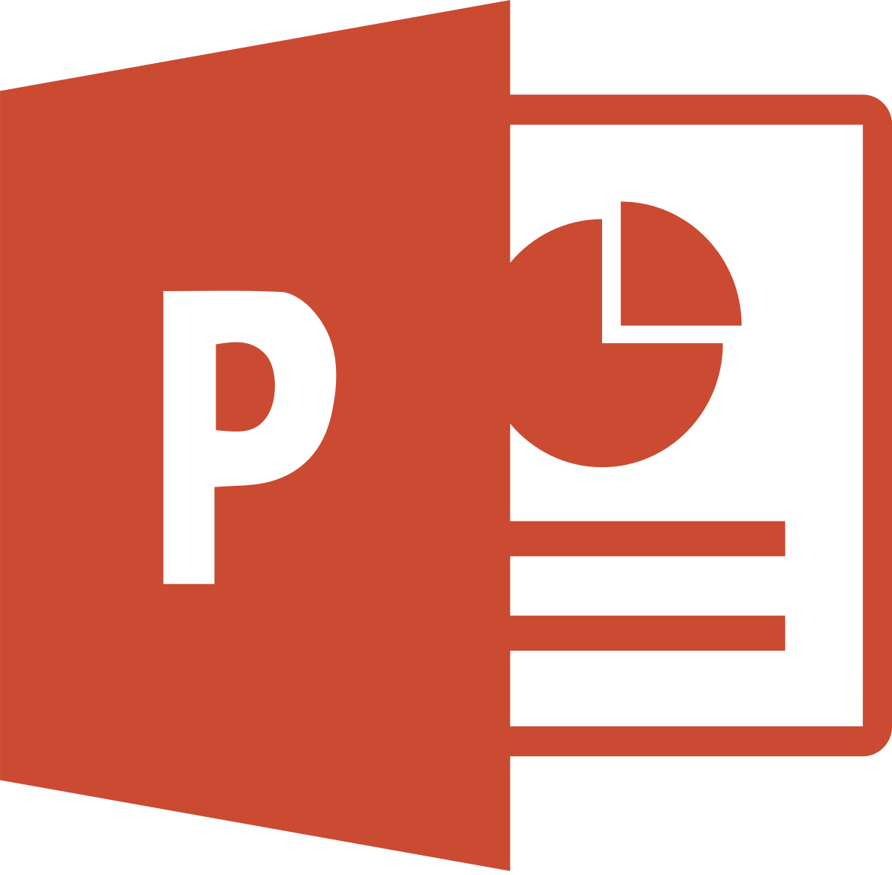

About Me
Graduated from Chemical Engineering, Universitas Gadjah Mada and Master of Energy, The University of Auckland, I have intensive experiences in Materials Engineering, especially Metallurgy. I am also familiar with Materials Analyses such as XRD, XRF, ICP, and SEM. Check My Academic Papers below to see more.
I love playing with data, specifically in Data Visualization, which allow me to create broad analyses and join several competitions. Check My Portfolio below if you find it interesting.
My other activities are closely related to digital world such as creating music, doing cover, and video editing since I also love traveling. Hopefully I will showcase my results in YouTube in the near future.
Professional software skills:



Other software skills:


Portfolio
-
What Makes an Airbnb Unit Price Expensive?
A side project in Tourism Sector during Covid-19 pandemic using webscraping. The project was invited to publish at Scientific Journal of Accounting and Management (JEMA).
JEMA Publication
-
Menilik Potensi Industri Gas Alam menjadi Metanol.
A short research project in a writing competition held by Databoks and Katadata in 2020. The paper is awarded as the first winner.
Databoks Publication
-

Data Analytic Capability for Non-Productive Time Prevention in Drilling.
A project to create Non-Productive Time prevention analysis in Oil and Gas drilling activities. The Project was showcased in Rekinnovation Competition held by Rekayasa Industri and nominated (Awarded Top 10) in the final in 2021.
Rekind Publication
Academic Footprint
My full list of publications can be accessed here. Please contact me at aput932 [at] aucklanduni [dot] ac [dot] nz to download my works for free. Otherwise, you have to purchase them from the Journals.
Here are some places I've visited. Except from Indonesia, mostly for academic purposes.
Let's Keeep In Touch
See u there!